पुस्तिका – 2
Good Parenting और नशामुक्त समाज
परिवार से प्रारम्भ होता है भविष्य
“बच्चों को नशे से बचाने का सबसे प्रभावी उपाय डर नहीं, संवाद है; नियंत्रण नहीं, विश्वास है; उपदेश नहीं, उदाहरण है।”
PDF डाउनलोड करें नई विंडो में खोलें सभी संसाधन
14 पृष्ठ · PDF लगभग 660 KB · छापकर सभा और बैठक में बाँटी जा सकती है।
विषय-सूची
किसी भी अध्याय पर टैप करके सीधे उस पृष्ठ पर पहुँचें।
- अध्याय 1: भूमिकापृष्ठ 3
- अध्याय 2: Good Parenting क्यों आवश्यक है?पृष्ठ 3
- अध्याय 3: बदलता समाज और बदलती चुनौतियाँपृष्ठ 3
- अध्याय 4: बच्चे नशे की ओर क्यों आकर्षित होते हैं?पृष्ठ 4
- अध्याय 5: परिवार की भूमिकापृष्ठ 4
- अध्याय 6: Good Parenting के पाँच स्तंभपृष्ठ 5
- अध्याय 7: संवाद : बच्चों की सुरक्षा का सबसे बड़ा कवचपृष्ठ 5
- अध्याय 8: डिजिटल युग की पैरेंटिंगपृष्ठ 6
- अध्याय 9: किशोरावस्था को समझनापृष्ठ 7
- अध्याय 10: बच्चों में चेतावनी संकेत पहचाननापृष्ठ 8
- अध्याय 11: यदि बच्चा नशे के संपर्क में आ जाए तो क्या करें?पृष्ठ 9
- अध्याय 12: परिवार और विद्यालय की साझेदारीपृष्ठ 9
- अध्याय 13: अभिभावकों के लिए 25 व्यवहारिक सुझावपृष्ठ 10
- अध्याय 14: परिवार संकल्प पत्रपृष्ठ 11
- अध्याय 15: निष्कर्षपृष्ठ 12
पुस्तिका पढ़ें
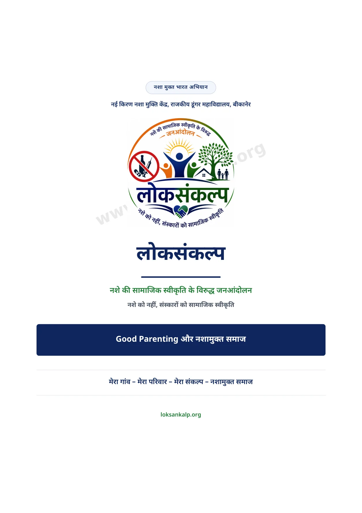
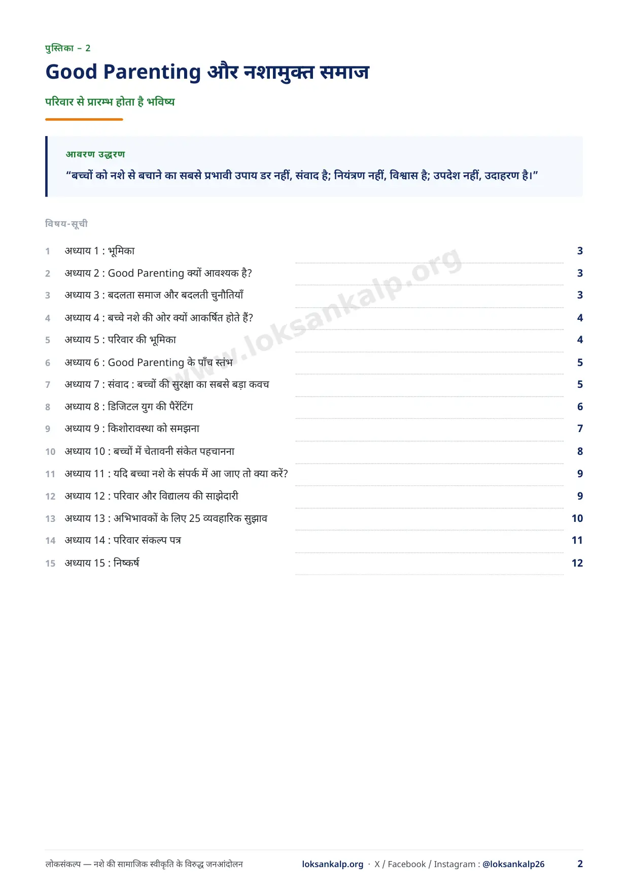
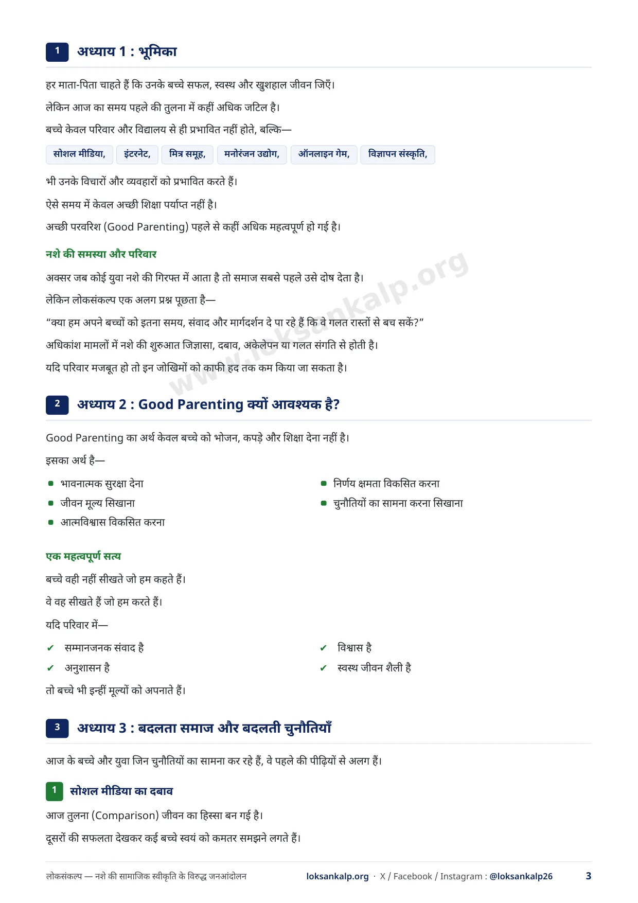
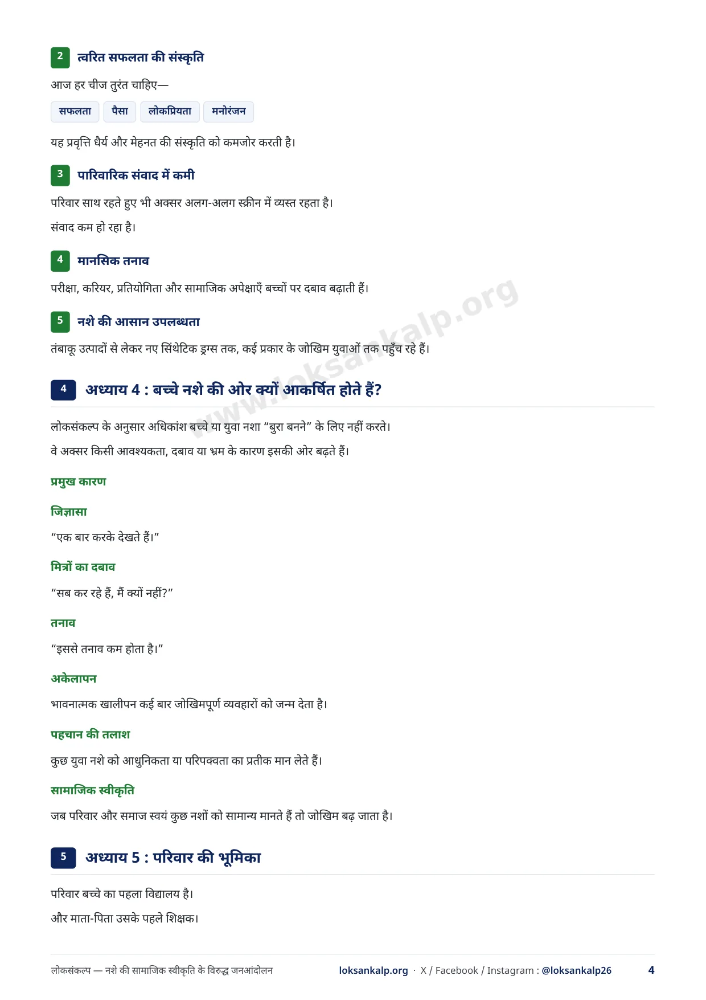
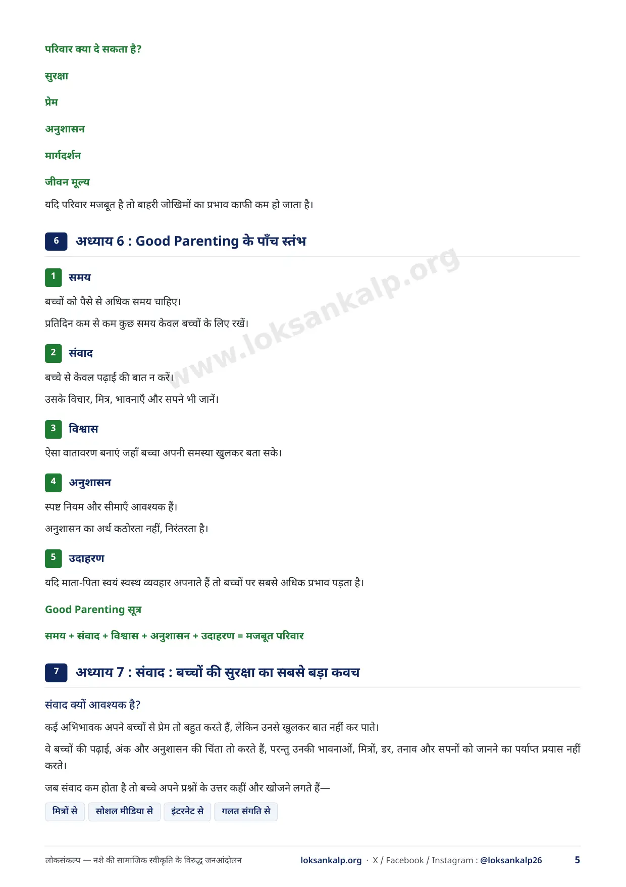
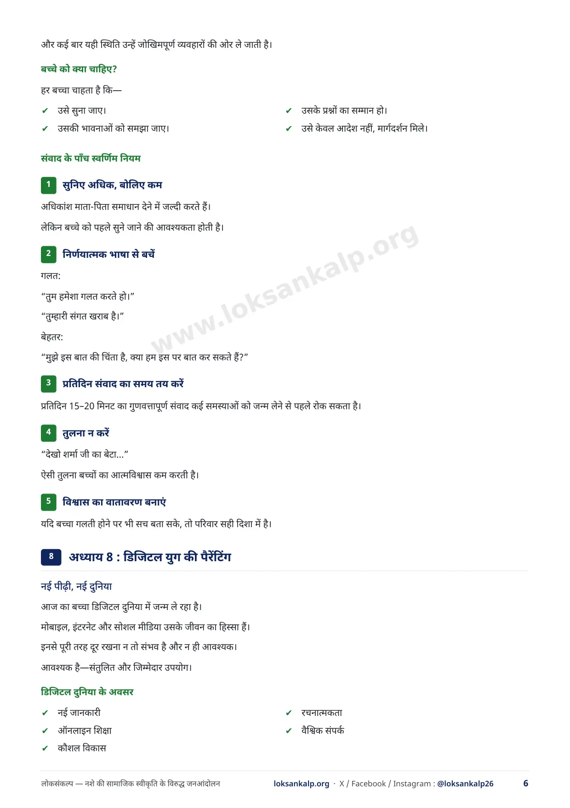
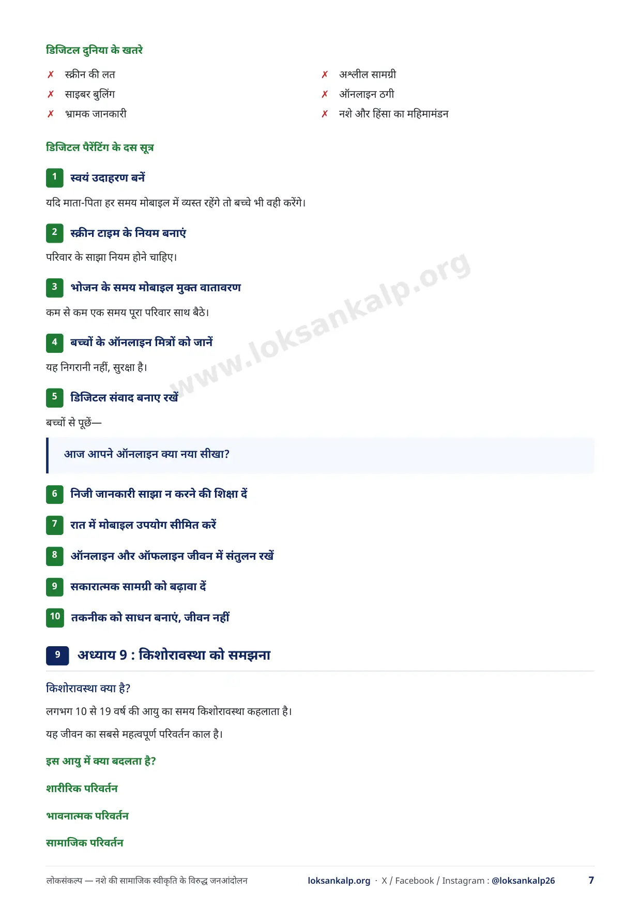
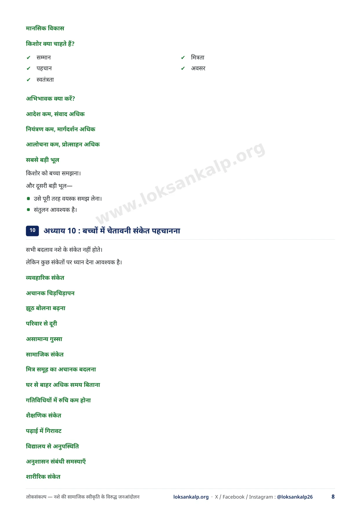
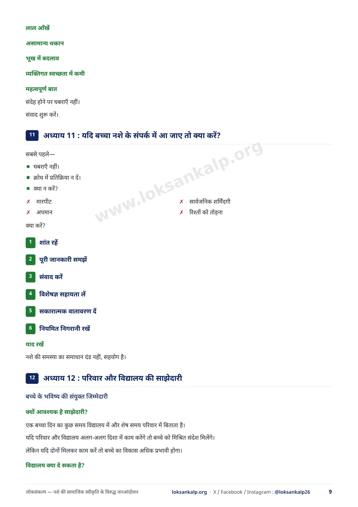
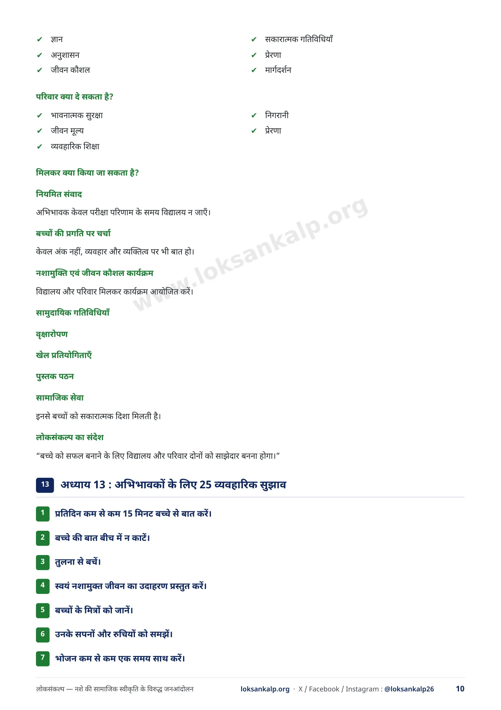
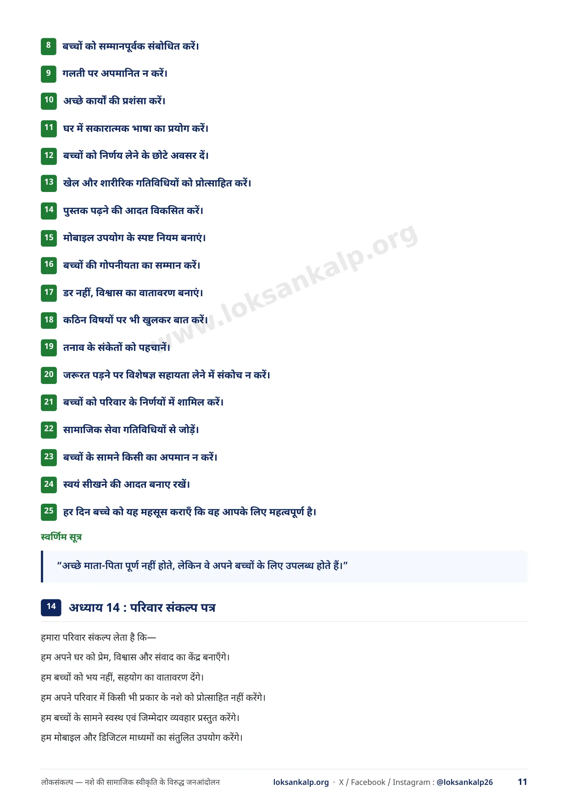
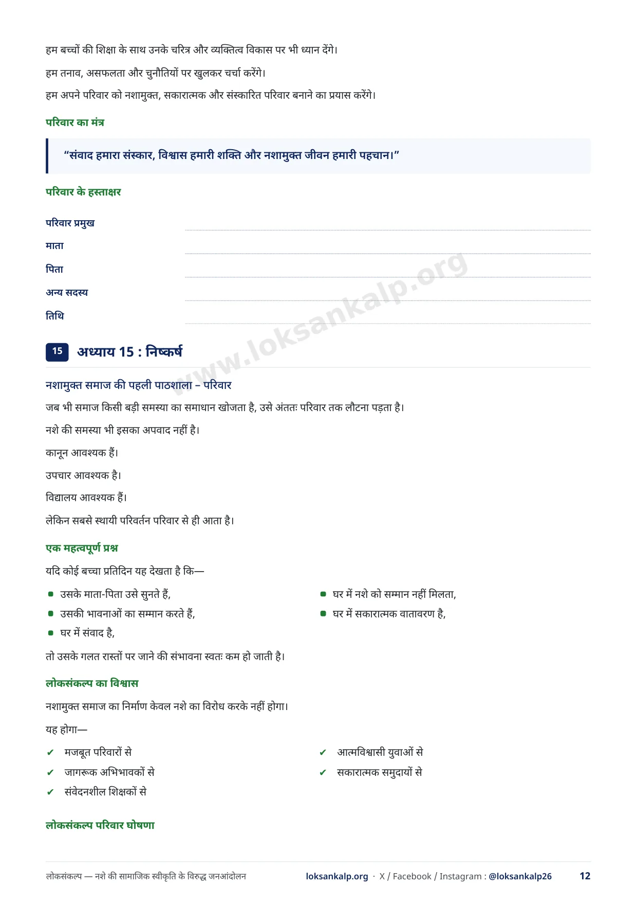
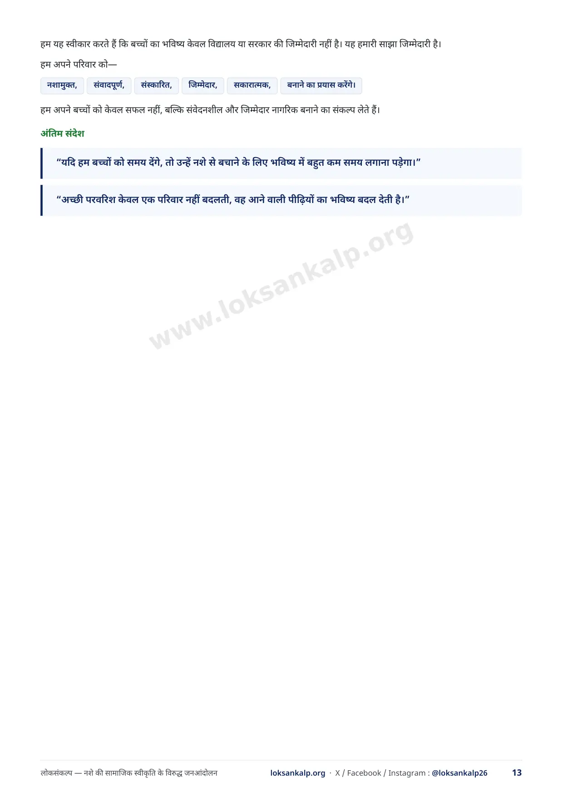
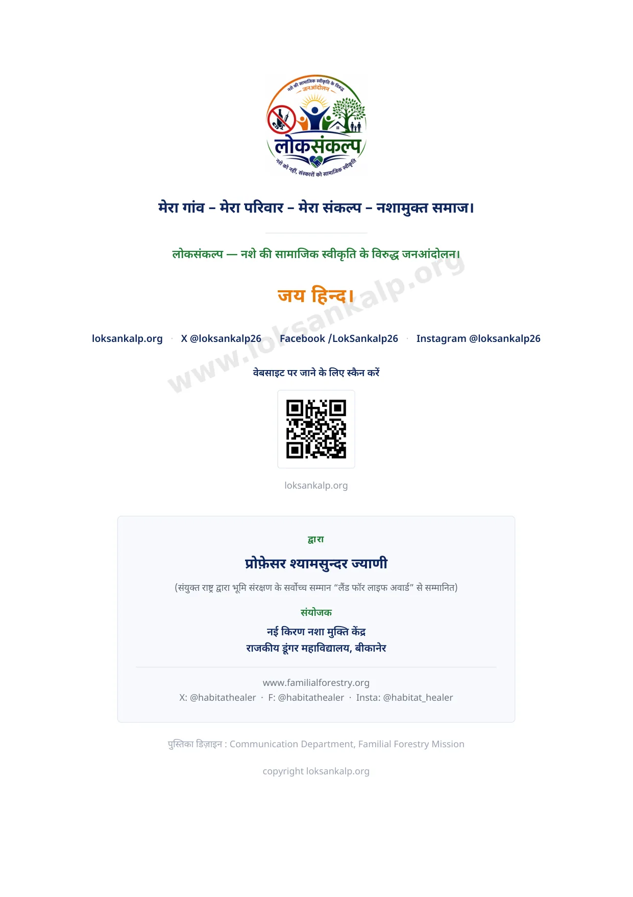
आगे क्या करें
पुस्तिका पढ़ने के बाद अपना संकल्प लें, या अपने गाँव में ग्राम सभा की तैयारी करें।